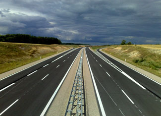

Despite a 1.1 percent increase in the U.S. Gross Domestic Product, the nation’s carbon dioxide emissions from fossil fuels declined by 2.8 percent in 2008, according to preliminary estimates by the Department of Energy’s Energy Information Administration (EIA).
The record decline was caused in part by a 5.2 percent decrease in emissions from transportation. Sky-high fuel prices in the first part of the year, followed by economic woes in the fourth quarter, contributed to a record-breaking decline in vehicle miles traveled in 2008 and an upsurge in the use of public transportation. Carbon dioxide emissions from industries also fell by 3.2 percent, following a five-year trend of falling industrial emissions, according to the EIA. While overall industrial output fell by 2.2 percent in 2008, the drop in output from energy-intensive industries - such as chemicals, primary metals, and non-metallic minerals - was much larger, in the range of 5.8 to 7.8 percent.
While lower energy use in the transportation and industrial sectors partly contributed to the drop in carbon dioxide emissions, that’s not the full story. The EIA notes that U.S. energy demand fell by 2.2 percent in 2008, which is less than the drop in carbon dioxide emissions. That means that some of the energy shifted to a source that produces lower carbon dioxide emissions. In fact, the electric power sector, which generates 41 percent of the carbon dioxide emissions in the United States, decreased its power generation by 1 percent in 2008, but decreased its carbon dioxide emissions by 2.1 percent. In other words, the power sector decreased its emissions intensity by 1.1 percent in 2008. The EIA attributes that accomplishment to a decrease in the use of all fossil fuels at power plants, a feat credited in part to an increase in electricity generated from wind power.
|
 SNORRI7/FLICKR The record decline in CO2 emissions in 2008 was caused in part by a 5.2 percent decrease in emissions from transportation. |
|
|